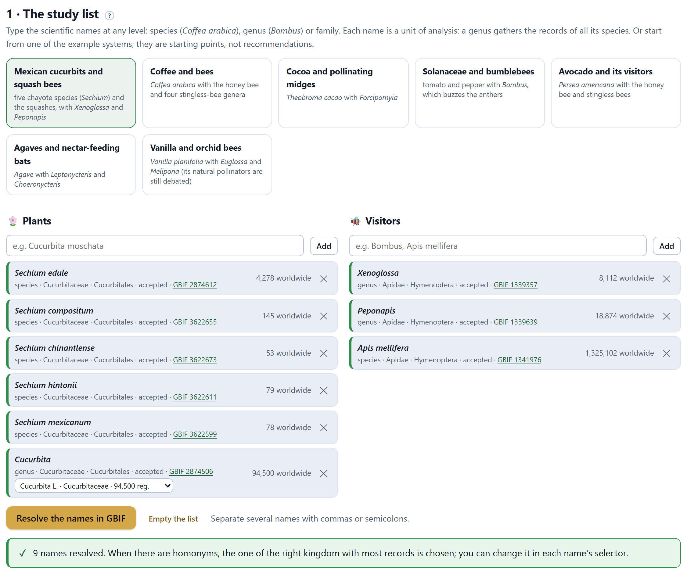
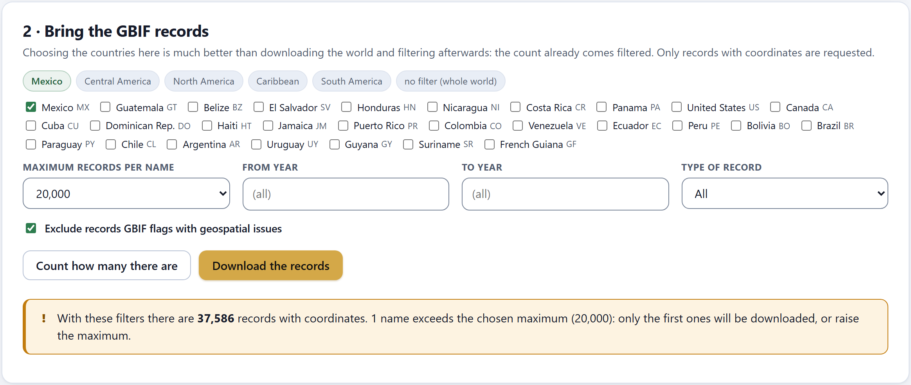
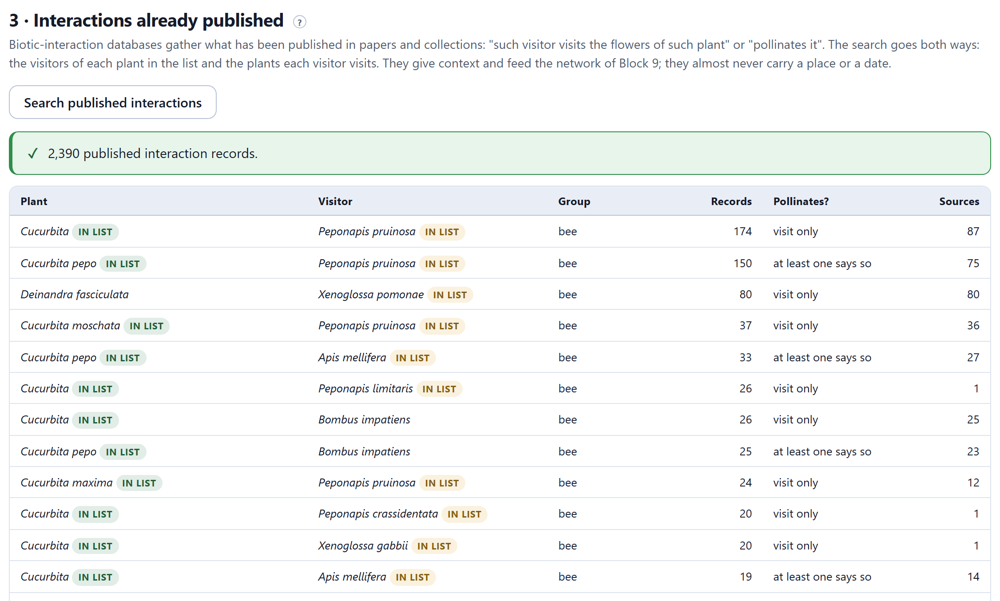
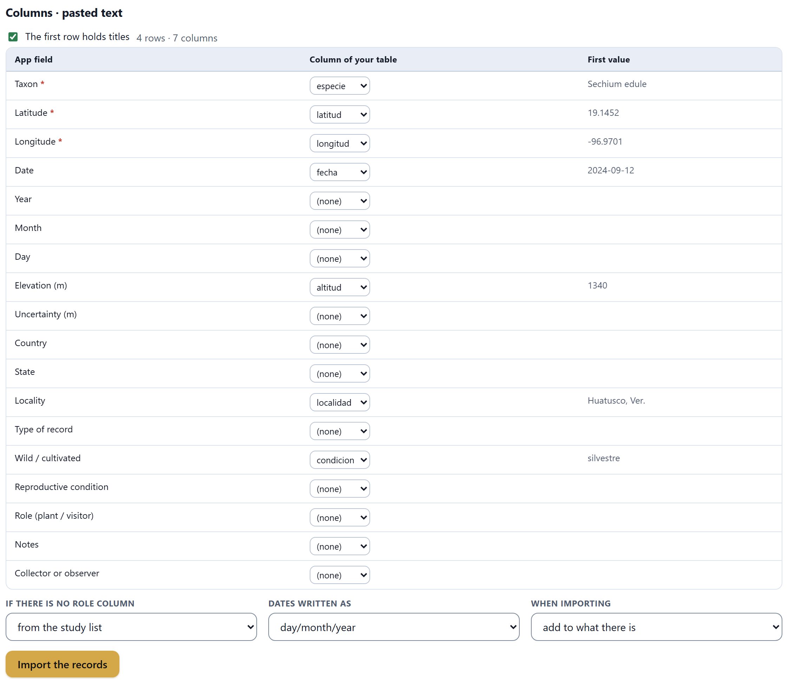
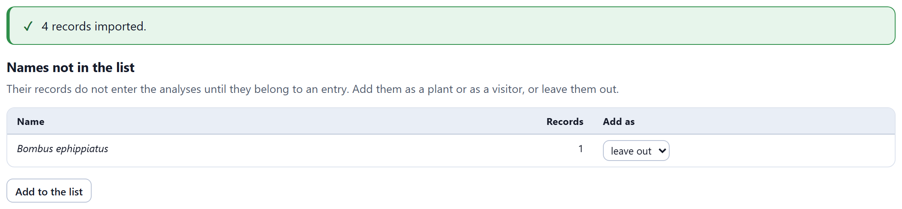
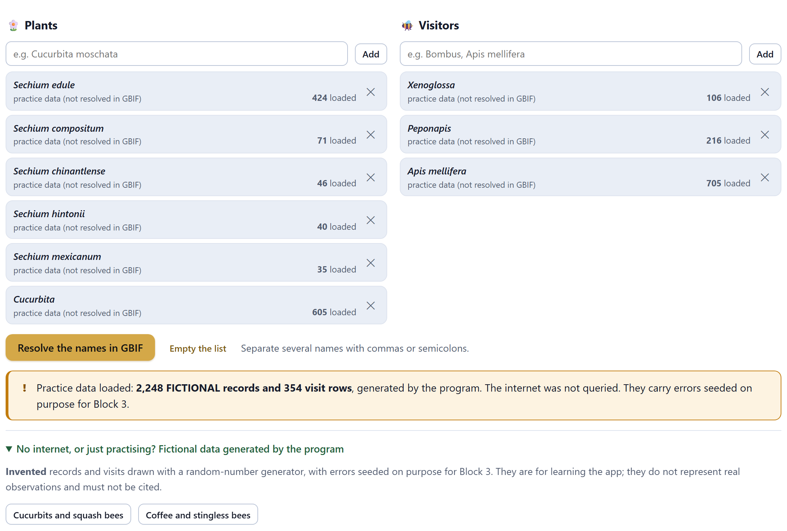
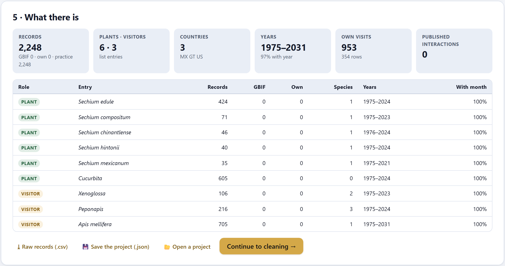

Which plants and which visitors enter the study, and all their records: those from GBIF, the interactions already published and your own. Nothing is analyzed yet: here things are gathered, counted and checked. It is the only block that uses the internet, and only when you ask it to.
A pollination study with occurrence data combines four sources that say different things (Section 1.6). Block 2 brings them together in five cards: the study list, the GBIF records, the published interactions, your own data and a summary of what there is.
| Source | What it contributes | Where it is used |
|---|---|---|
| GBIF | Presence records from collections, herbaria, citizen observations and projects, with coordinates, date, type of record and source dataset. | Blocks 3 to 8 |
| Biotic-interaction database | Published plant–visitor pairs (“visits flowers of”, “pollinates”), almost never with a place or a date. | Block 9 |
| Your presence records | The same as GBIF, with your own quality control: plants and insects you saw, with their point. | Blocks 3 to 8 |
| Your visit observations | Plant–visitor pairs you observed, with how many visits and, if you can, site and date. | Block 9 |
Everything starts with the names. They are typed at any level —species (Coffea arabica), genus (Bombus) or family— in the Plants column or in the Visitors column, and each name is an entry of the list: a genus gathers the records of all its species. Several names are separated with commas or semicolons. Or you can start from one of the seven example systems, which are starting points, not recommendations: Mexican cucurbits and squash bees; coffee and bees; cocoa and pollinating midges (Forcipomyia); Solanaceae and bumblebees; avocado and its visitors; agaves and nectar-feeding bats; and vanilla and orchid bees.

Resolve the names in GBIF looks up each name in the GBIF taxonomic backbone. When there are homonyms —the same name in two kingdoms, or a fossil name alongside the living one— the app picks the one from the kingdom that matches the role (plants or animals) with the most records, and leaves a selector to change it. In Figure 2.1, Cucurbita L. has 90,979 records and a homonym with 180. Each name is shown with its number of records worldwide; after counting with the chosen countries (Section 2.3), the number becomes that of those countries.
| What a name can say | What it means and what to do |
|---|---|
| accepted | The name is accepted in the GBIF backbone. This is the normal case. |
| synonym or doubtful | GBIF considers it a synonym or doubtful. The records are requested by the key of the chosen name; check whether you should type the accepted name instead. |
| GBIF does not recognise the name: check the spelling | There was no match. It is almost always a typo or a very recent name. |
| practice data (not resolved in GBIF) | The entry comes from the fictitious data (Section 2.6): it has no GBIF key and does not need one. |
When you click one of the seven systems, the list, the records and the published interactions are replaced by those of the example, and the countries are set to its own. If you already had a study, save it first as a project (Section 2.7). To remove a single name use its ✕: it takes its records with it, and the app says so. Empty the list deletes the whole study.
The second card requests the records of each resolved name, only with coordinates and filtered by country on the server. Choosing the countries here is much better than downloading the world and filtering afterwards: the count already comes filtered and the download is shorter.

| Control | What it does |
|---|---|
| Regions and countries | The buttons Mexico, Central America, North America, Caribbean and South America check or uncheck their countries; the checkboxes are ticked one by one. no filter (whole world) unchecks them all. |
| Maximum records per name | 5,000, 20,000, 50,000 or 99,000. A name with more is downloaded up to the maximum and marked as cut. |
| From year and To year | Left empty, all years are requested. |
| Type of record | All, collection specimens only, observations only, or specimens and observations without fossils or records of unknown type. |
| Exclude records GBIF flags with geospatial issues | Checked by default: GBIF has already detected impossible, swapped or out-of-country coordinates in them. Block 3 also checks what GBIF does not flag. |
| Count how many there are | Asks how many records there are with those filters, without downloading. It is worth always doing this first. |
| Download the records · Stop | Downloads name by name, in pages of 300 with retries, with a progress bar per name. Stop interrupts the download; whatever has already arrived is kept. |
When it finishes, the app says how many records arrived and reminds you that GBIF asks for every download to be cited with its DOI. Downloading a name again replaces only its GBIF records, never yours: if a name failed or was stopped, simply repeat the download.
The app requests the records from the public GBIF interface, which does not issue a DOI. For the final paper, repeat the download on the GBIF portal with the same filters —they are kept in the calculation log of Block 10— and cite the DOI it gives you. The report also lists the datasets that contributed cleaned records, because GBIF asks for each one to be credited.
| If a generalist visitor (the honey bee) exceeds the maximum | then there is no need to raise it: 20,000 well-spread records are enough for its map, its calendar and its niche. Note it in the methods. |
| If the plant or the visitor you care about exceeds the maximum | then raise it to 50,000 or 99,000, or narrow the years: a cut leaves out records at random from the order in which GBIF delivers them. |
| If a name has fewer than 20 records in the area | then its tests will be weak: consider merging it with its genus (a single entry) or widening the area. |
Search published interactions queries a public database of biotic interactions, which gathers what has been published in papers, databases and collections, in both directions: the visitors to the flowers of each plant in the list, and the plants whose flowers each visitor visits. The result is a table of pairs with the visitor’s group (bee, wasp, hoverfly, fly, butterfly or moth, beetle, bat, bird), how many records support it and whether at least one of them calls it pollination and not just a visit.

Up to 4,000 records are requested per name. The table shows up to 300 pairs sorted by number of records; ⤓ Interactions (.csv), at the foot, downloads all the records with their type, their source (when the database gives it) and their coordinates (when they have them). When the database returns the citation of the original study, a Sources column also appears with how many studies support each pair.
Figure 2.3 already offers three useful readings. There are published records of Sechium edule with the honey bee, but none with the squash bees: the chayote–Xenoglossa link that the practice study explores is undocumented. Some plants appear under names that are no longer used (Sicyos edulis): Block 9 can apply the synonyms of Block 3 to them. And the same pair appears at species and at genus level (Cucurbita pepo and Cucurbita): Block 9 lets you group plants and visitors by genus.
The fourth card imports two kinds of table, each with its own tab. Presence records: one row per plant or insect seen, with taxon, latitude and longitude and, if you have them, date, elevation, locality and whether it is wild or cultivated. Visit observations: one row per plant–visitor pair observed, with how many visits and, if you can, site and date. It accepts .csv, .txt, .tsv and .xlsx —in UTF-8 or Windows-1252, with any separator— or the text that is pasted when you copy cells from a spreadsheet. ⤓ Download an empty template gives a table with the headings the app recognizes.

especie, latitud, longitud, fecha, altitud, localidad and condicion on its own; the first value of each one lets you check this at a glance. The fields with an asterisk are required.| Table | Fields it recognizes (by their heading, in Spanish or English) |
|---|---|
| Presence records | taxon*, latitude*, longitude*, date (or year, month and day separately), elevation, uncertainty, country, state, locality, type of record, wild/cultivated, reproductive condition, role (plant/visitor), notes, collector or observer. Darwin Core headings (scientificName, decimalLatitude, eventDate…) are recognized too. |
| Visit observations | plant*, visitor*, number of visits (1 if missing), date (or year, month and day), site, latitude, longitude, type of interaction, notes. |
Below the assignment there are three options. If there is no role column: the role of each record is taken from the study list (the normal case), or all are marked as plants or all as visitors. Dates written as: day/month/year or month/day/year, for dates with slashes; those of the form 2024-09-12 are not ambiguous. When importing: add to what there is, or replace your previous data of that kind (never the GBIF data).

The records of a name that is not in the list do not enter the analyses until they belong to an entry. In the table of Names not in the list you choose, for each one, whether to add it as a plant, as a visitor or to leave it out, and Add to the list applies it.
Under the list, the collapsible No internet, or just practising? Fictional data generated by the program loads one of the two practice studies (Section I.7) without querying the internet: Cucurbits and squash bees or Coffee and stingless bees. With them you can reproduce this manual.


| Tile | What it says | In the practice study |
|---|---|---|
| Records | The total and its origin: GBIF, own, practice. | 2,248 · practice 2,248 |
| Plants · visitors | The entries of the list with each role. | 6 · 3 |
| Countries | In how many countries the records fall, with their codes. | 3 · MX GT US |
| Years | The range and the fraction of records with a year. A future year is the first sign of an error. | 1975–2031 · 97% with year |
| Own visits | The imported visits and how many rows describe them. | 953 in 354 rows |
| Published interactions | The records brought from the interaction database. | 0 |
The buttons at the foot: ⤓ Raw records (.csv) downloads all the records as they arrived; 💾 Save the project (.json) saves the list, the records, the visits, the interactions and the download filters in a single file; 📂 Open a project recovers it on any computer; Continue to cleaning → takes you to Block 3.
The browser already remembers the study (Section I.5), but the .json project is the only thing that survives a change of computer or the clearing of the browser’s data. And it is what lets you repeat the analysis with exactly the same records months later, when GBIF will already hold others.
| Message | What it means and what to do |
|---|---|
| First resolve the names in GBIF (section 1) | Counting and downloading need the GBIF key of each name. |
| Could not query GBIF… Check your connection, or practise with the fictional data below | No internet, or the service is down. The practice data work offline. |
| N names exceed the chosen maximum | Only the first records of those names will be downloaded. Raise the maximum or narrow the years (rule in Section 2.3). |
| Download finished… Some names failed or were stopped | Repeat the download: only the GBIF records of those names are replaced. A name that was cut keeps what it managed to download and is marked as such (“cut: N kept”). |
| N published interaction records; N queries failed | Some of the queries to the interaction database did not respond. Repeat the search. |
| Still to assign: … | A required field (taxon, latitude and longitude; or plant and visitor) has no column. Choose it in the assignment. |
| N records imported. N rows without a taxon or readable coordinates were skipped (the first: row N) | Those rows were not imported. Check the original table. |
| That file is not a PollinationPro project | The .json does not come from this app’s save button. |
| The previous session was recovered… | Not a warning: the browser remembered the study from last time. |